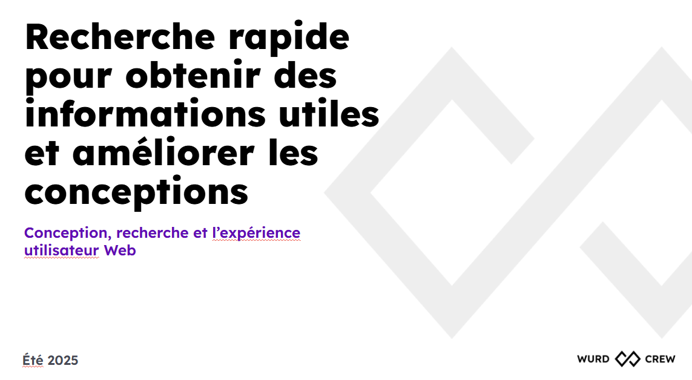

Ce que nous avons accompli cette année
Malgré tout, nous avons continué à livrer ce qui compte vraiment!
Améliorer la manière dont les gens trouvent nos services
L'outil le plus complexe qui soit
Contribuer à un changement culturel important
Imaginer le futur du contenu Web
Quelle année !